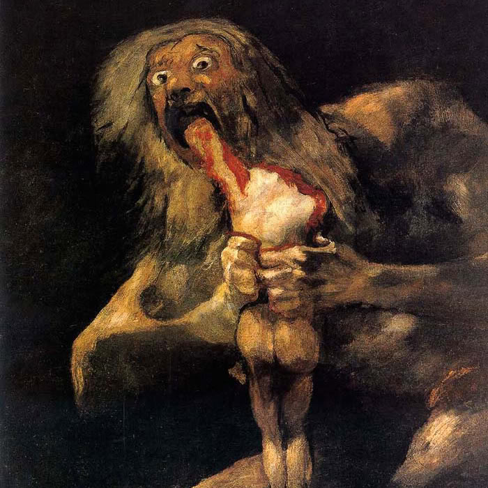

Saturno Devorando Um Filho
Artista: Francisco de Goya y Lucientes
Técnica: Mista
Movimento Artístico: Romantismo
Localização Atual: Museu do Prado
Sobre a obra: A pintura representa o deus Cronos, ou Saturno na mitologia romana, comendo um de seus filhos. A história por traz dela é que Saturno devorava seus filhos recém-nascidos por temer um dia ser destronado por um de seus descendentes.